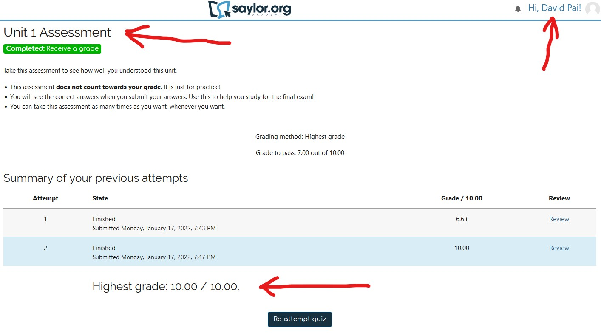

📖 Overview
Take the Unit 01 assessment for CS201: Elementary Data Structures and capture a screenshot that includes your name, the assignment, and your score.
Instructions
- Go to the Unit 01 assessment on Saylor (or the course platform).
- Complete the assessment; you may attempt until you pass.
- Take a screenshot showing your name, the assignment title, and your final score.
- Submit the screenshot to the course as instructed.
Mac screenshot: Shift-Command-4 then select area. Windows: Use Snip & Sketch.
Example
Should look something like this (required items highlighted):
